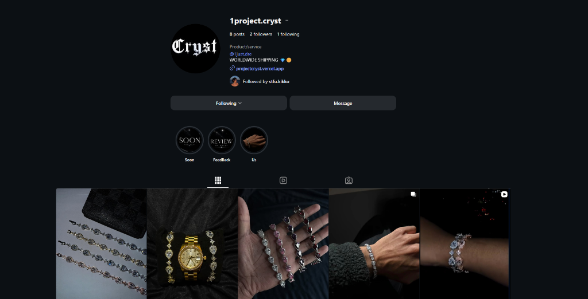
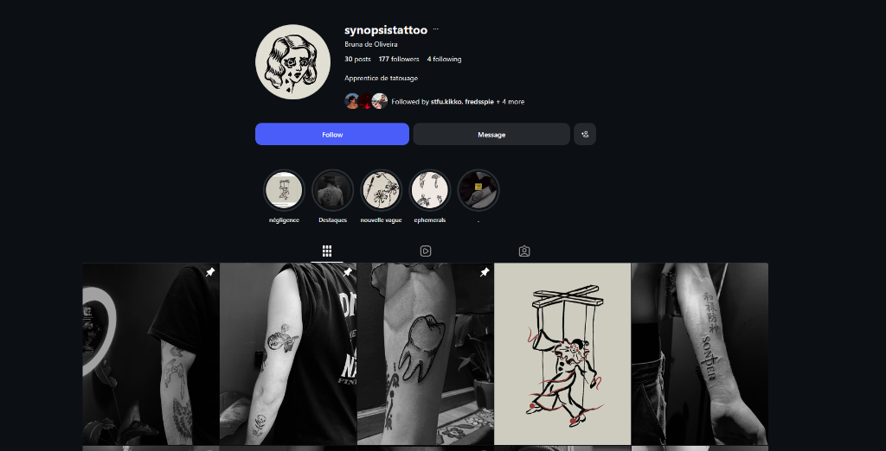
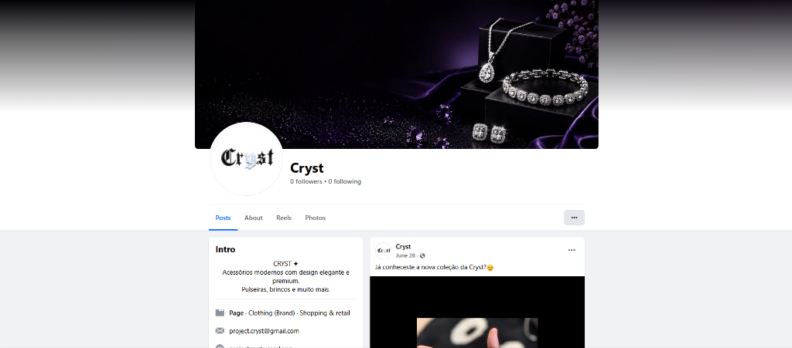
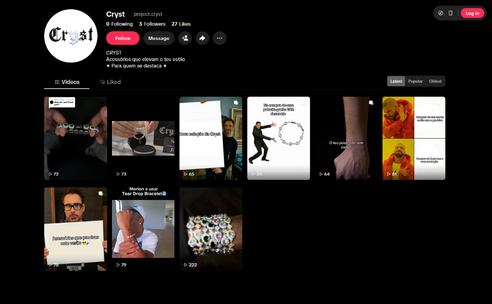

Redes Sociais & Marketing Digital
Estratégias de conteúdo, gestão de redes sociais, Meta Ads e anúncios orientados a engajamento e resultados.
Marketing de Instagram
Marketing de Facebook
Marketing de TikTok
Meta Ads
Estratégia de Conteúdo

Project Cryst - Instagram
Gestão de conteúdos, estética visual e estratégia de marca (Projeto PAP).
Visitar @1project.cryst no Instagram ↗
Synopsis Tattoo - Instagram
Gestão de redes sociais e estratégia de conteúdo (Projeto Comercial).
Visitar @synopsistattoo no Instagram ↗
Project Cryst - Facebook
Gestão de página oficial e presença de marca no Facebook (Projeto PAP).
Visitar Cryst no Facebook ↗
Project Cryst - TikTok
Criação de conteúdos curtos, vídeos promocionais e Reels no TikTok (Projeto PAP).
Visitar @project.cryst no TikTok ↗